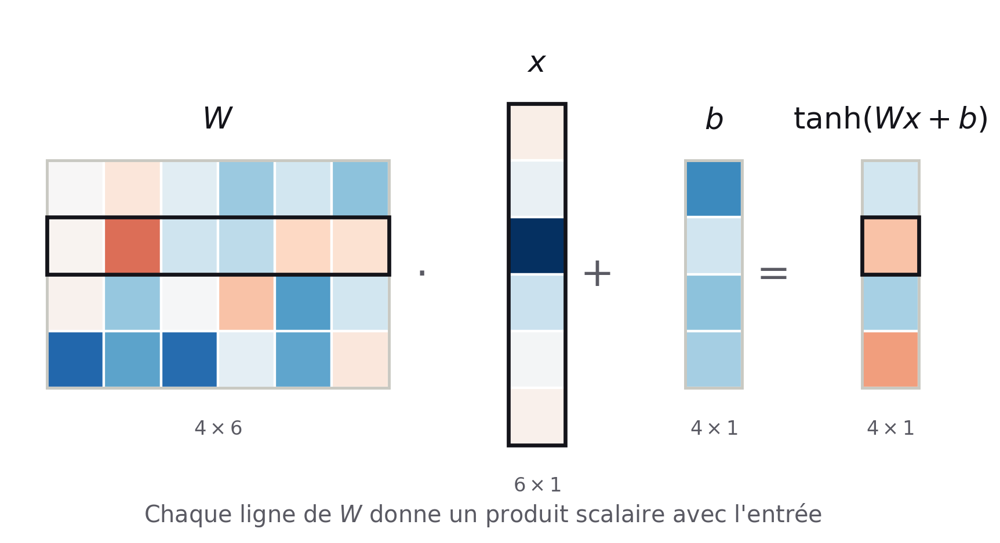

Centre de calculs et modèles d'IA
Ivanhoé Botcazou
Doctorant en intelligence artificielle au LERIA
22 Octobre 2026
Au programme
Séminaire de Dartmouth 1956
La naissance de la discipline : Intelligence Artificielle

Au second rang, de gauche à droite : Oliver Selfridge, Nathaniel Rochester, Marvin Minsky, John McCarthy.
Au premier rang : Ray Solomonoff, Peter Milner, Claude Shannon.
Photo : Nathaniel Rochester — The Minsky Family
« Quels problèmes de niveau humain un algorithme serait-il capable de résoudre ? »
- Objectif : Simuler l'intelligence humaine.
- Vision : Reconnaissance d'images.
- Langage : Génération automatique de texte.
- Modèle : Réseaux de neurones artificiels.
1. IA : modélisation - apprentissage - prédiction
Schéma pour les modèles d'IA
Prédire un vecteur $f_\theta(x)$ dans un espace normé $(F, \|\cdot\|)$
$F = \mathbb{R}^d$, $\;f_\theta(x) \in \mathbb{R}^d$Coût : $\|y - f_\theta(x)\|_2^2$
Prédire une loi de probabilité $p_\theta(\cdot\,|\,x)$ sur l'espace des classes $(\mathcal{Y}, \mathcal{A})$
Binaire : $\mathcal{Y}=\{0,1\}$, $\;p_\theta(\cdot\,|\,x) = \sigma(f_\theta(x)) \in \Delta(\mathcal{Y})$Coût : $KL\big(\delta_y \,\|\, p_\theta(\cdot\,|\,x)\big) = -\log p_\theta(y\,|\,x)$
Ce que fait un modèle de classification

Les deux classes sont imbriquées, aucune frontière linéaire.
Ce que fait un modèle de classification

$f_\theta$ transporte les données vers un nouvel espace de représentations.
Ce que fait un modèle de classification

$\sigma$ est une fonction d'activation pour obtenir une mesure de probabilité $p_\theta(\cdot\,|\,x) \in \Delta(\mathcal{Y})$.
Algèbre linéaire & réseaux de neurones

Schéma d'un réseau de neurones artificiels à une couche
Interprétation matricielle d'une couche :

- Transformations affines : $W \cdot x + b$
- Fonctions d'activation non linéaires
- Changements de repère et transformation de la géométrie
Théorème d'approximation universelle
Théorème (Pinkus, 1999). Soit \(\sigma \in \mathcal{C}(\mathbb{R}, \mathbb{R})\), appliquée coordonnée par coordonnée. \(\sigma\) n'est pas polynomiale si et seulement si :
\[ \begin{aligned} &\forall K \subset \mathbb{R}^n \text{ compact},\ \forall f \in \mathcal{C}(K, \mathbb{R}^m),\ \forall \varepsilon > 0,\ \exists\, k \in \mathbb{N},\\ &A \in \mathbb{R}^{k \times n},\ b \in \mathbb{R}^{k},\ C \in \mathbb{R}^{m \times k} \ \text{ tels que } \ \sup_{x \in K} \big\| f(x) - C\,\sigma(Ax + b) \big\| < \varepsilon . \end{aligned} \]Exemple : \(n = m = 1\), \(K = [0, 1]\), \(\sigma\) sigmoïde.
![Un neurone est une marche ; une somme de k neurones approche f sur [0,1]](assets/img/05_approximation_universelle.png?v=2)
Cybenko (1989) · Hornik (1989) · Pinkus (1999)
Résultat d'existence : rien sur la taille \(k\), sur l'apprentissage des poids, ni sur la généralisation.
Apprentissage : minimiser un coût
Initialisation : poids tirés au hasard, ni trop grands (explosion du gradient) ni trop petits (vanishing du gradient).
Xavier (Glorot) — tanh, sigmoïde
\[ W \sim \mathcal{U}\big([-x,\, x]\big), \quad x = \sqrt{\frac{6}{n_{\text{in}} + n_{\text{out}}}} \]Kaiming (He) — ReLU
\[ W \sim \mathcal{N}\!\left(0,\, \frac{2}{n_{\text{in}}}\right) \]\(n_{\text{in}}, n_{\text{out}}\) : nombre de neurones en entrée / en sortie de la couche
Coût sur un batch aléatoire d'exemples \(B\) : \[ \mathcal{L}_B(\theta) = \frac{1}{|B|} \sum_{i \in B} \ell\big(f_\theta(x_i),\, y_i\big) \]
Objectif : \(\theta^\star \in \arg\min_\theta \mathcal{L}(\theta)\)
Descente de gradient stochastique
La malédiction de la dimension
Les modèles de réseaux de neurones vont de quelques millions à des centaines de milliards de paramètre aujourd'hui. - pour des images, modélisé par des vecteurs de taille 1024*1024 on est dans un espace de grande dimension, les distance n'ont plus de sens ? - Un recouvrement de l'espace pour avoir un bon échantillonnage de la fonction objectif demande un volume d'exemple (x,y) non gigantesque - deux vecteurs centré tiré de manière aléatoire sont presque tjs orthogonaux donc les poids de chaque neuronne induisent des directions indépendantes (resultat du à la loi des grand nombre) - le ratio entre le volume de la boule unité pour la distance euclidienne est écrasée par le volume de l'hypercude = 2^d, les poids sont tous isolés generer une modélisation de la boule de dim 2, 3 et 4 dans lhypercube en animation pour d=4 avec vision temporelle ? un avis2. Ressources de calcul et de stockage
3. Cas particulier : les modèles de langues
Merci
Questions ?